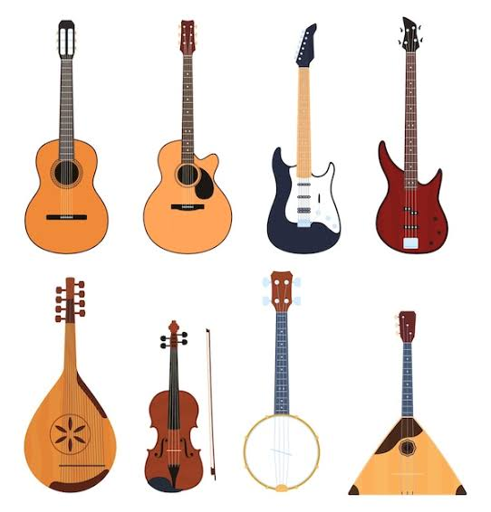
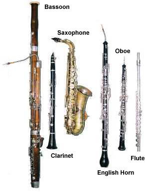
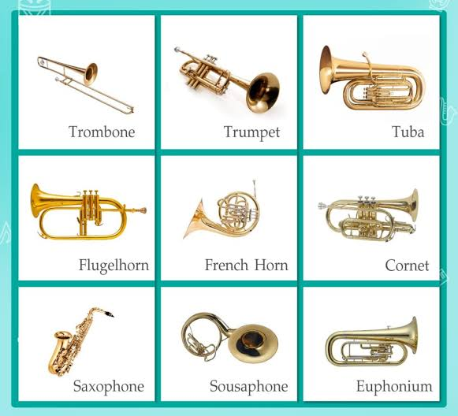
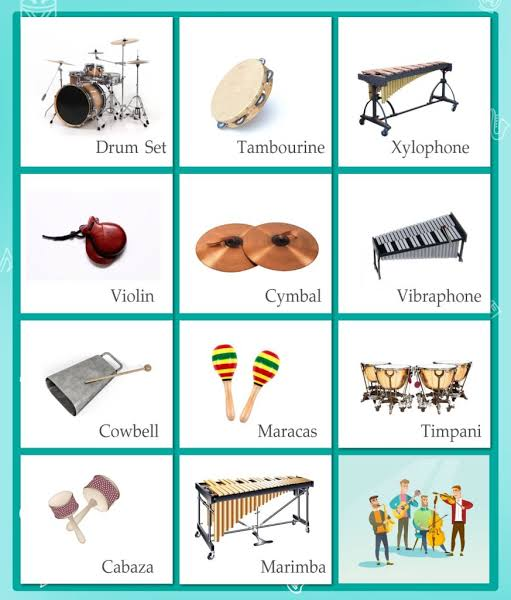
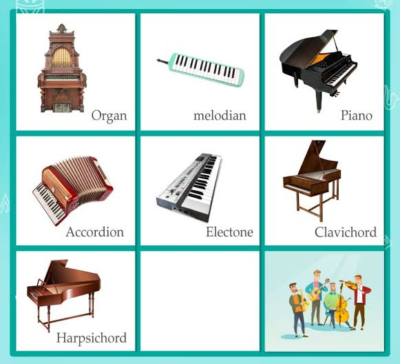

ประเภทเครื่องดนตรี (Instruments)
เครื่องดนตรีสากลแบ่งออกเป็น 5 ประเภท ตามวิธีทำให้เกิดเสียง

2.1 เครื่องสาย (String)

2.2 เครื่องเป่าลมไม้ (Woodwind)

2.3 เครื่องเป่าลมทองเหลือง (Brass)

2.4 เครื่องกระทบ (Percussion)

2.5 เครื่องลิ่มนิ้ว (Keyboard)